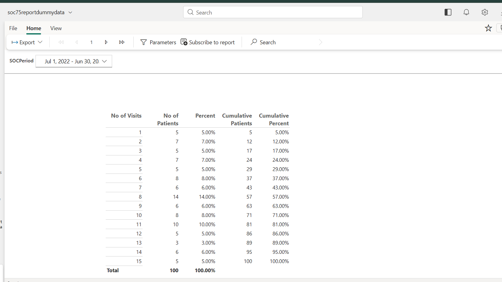
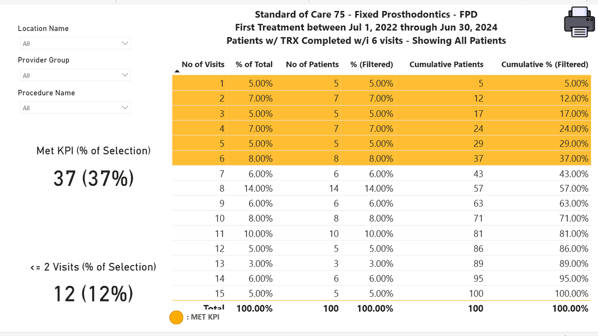
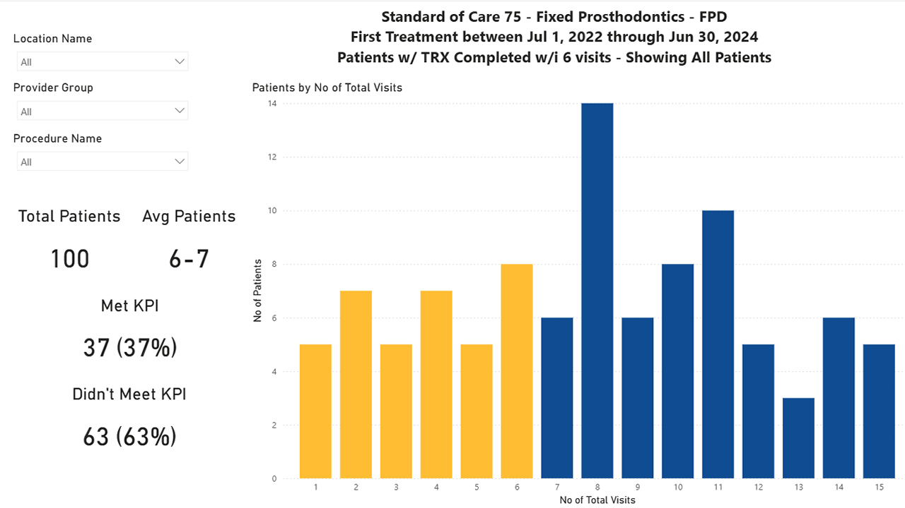
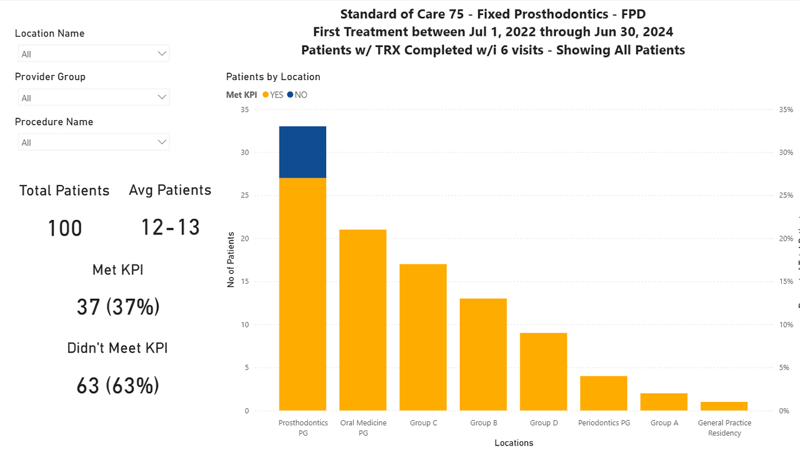

My Work Sample
In my time working as a Data Analyst Intern, my main mission throughout the experience was to work with Power BI to develop a dashboard with visualizations that told a story.
Before I entered this position, there existed a static PDF much like in the image below, showing all the data in tables without any other visualizations. My manager wanted something more interesting, something that stakeholders could dig into personally to draw their necessary conclusions.
*Please note, all data was randomized in order to display the work done without revealing sensitive information
I needed to develop a dashboard that could create these visualizations using the data given. It was an interesting and complicated mission, but it was also an incredibly fruitful learning experience.
I learned how to work with DAX, properly manage datasets, future-proof the dashboard to allow for the input of future datasheets, perfect the story that the dashboard is trying to tell, and introduce color theory through the use of gold to indicate success.
At the bottom of the page are images from the dashboard. The data can be "sliced" to show different periods of time (shown below), as well as different chunks of data based on locations or procedures within a period of time. After completing this, I recreated the static PDF-style report in Power BI Report Builder (page 1 of which was shown above) and linked the two together.

This was overall a successful mission. We managed to take what we already had, recreate it in an easy to use format and shift away from using an antiquated software, and then add onto it with a dashboard utilizing visualizations and slicers.
  